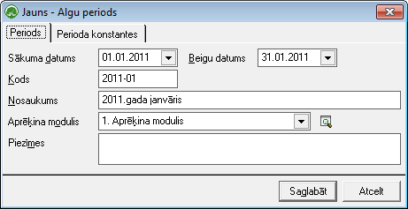

Algu periodi¶
Šajā sarakstā tiek nodefinēti algu periodi algu aprēķiniem. Aktīvais algu periods tiek norādīts Rīkos - Algu perioda atvēršanā . Lai veiktu algu aprēķinu par mēnesi nepieciešams šo periodu izveidot Algu periodu sarakstā un pēc tam norādīt šo periodu kā aktīvu Algu perioda atvēršanā . Algu aprēķins ir iespējams tikai aktīvajā algu periodā.
{kind=link}
Sākuma datums - jānorāda perioda sākuma datums (mēneša pirmā diena).
Beigu datums - jānorāda perioda beigu datums (mēnešapēdējā diena).
Kods - perioda kods.
Nosaukums - perioda nosaukums.
Aprēķina modulis - jānorāda Aprēķina modulis , ja uzņēmumā tiek izmantoti vairāki.
Piezīmes - iespēja aizpildīt piezīmes par periodu.

Vairāku uzņēmumu uzskaitē, algu periodi visiem uzņēmumiem ir kopīgi.
Perioda konfigurācijas datu izmantošana¶
Lai pareizi tiktu piemēroti konfigurācijas dati algu aprēķinā, jāpievērš uzmanība sekojošajam:
1. Pievienojot jaunu periodu Ienākuma nodokļa un Sociālo nodokļa metožu sarakstos tiek izveidoti jauni ieraksti atbilstošajam periodam ar tādām pašām nodokļa un atvieglojumu likmēm, kā tas ir norādīts iepriekšējā periodā. Ja likmes ir mainījušās, tad tās pirms algu aprēķina uzsākšanas atbilstošajā periodā ir jānomaina.
2. Notikumu sarakstā jāpievieno izmaiņas no standarta kalendāra, kas attiecas uz visiem darbiniekiem - perioda brīvdienas, darba dienas, kas iekrīt brīvdienās, īsās darba dienas. Notikumu saraksta ieraksti nodrošina pareizu perioda darba dienu aprēķinu.
3. Algu aprēķinu žurnālā , atvērtajā algu aprēķinā ar taustiņa F4 palīdzību var atvērt perioda datus, kur tiek parādīti piemērojamās nodokļu likmes un atvieglojumi strādājošajam. Lai pareizi tiktu aprēķināta alga, perioda datiem jābūt noteiktiem.
4. Pievienojot jaunu algu aprēķina periodu, tajā tiek pārnestas iepriekšējā algu periodā pievienotās Algu tarifikācijas konstantes . Ja konstantes vērtības jāmaina, tas jādara pirms algu aprēķina uzsākšanas algu aprēķina perioda aprakstā.